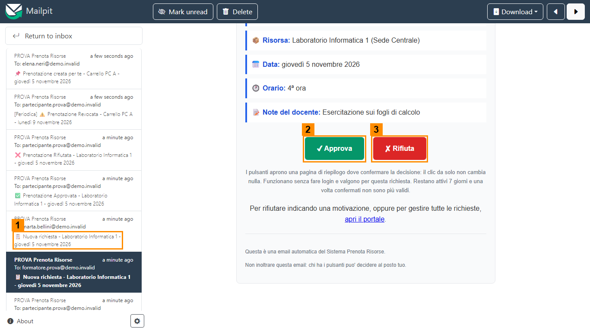
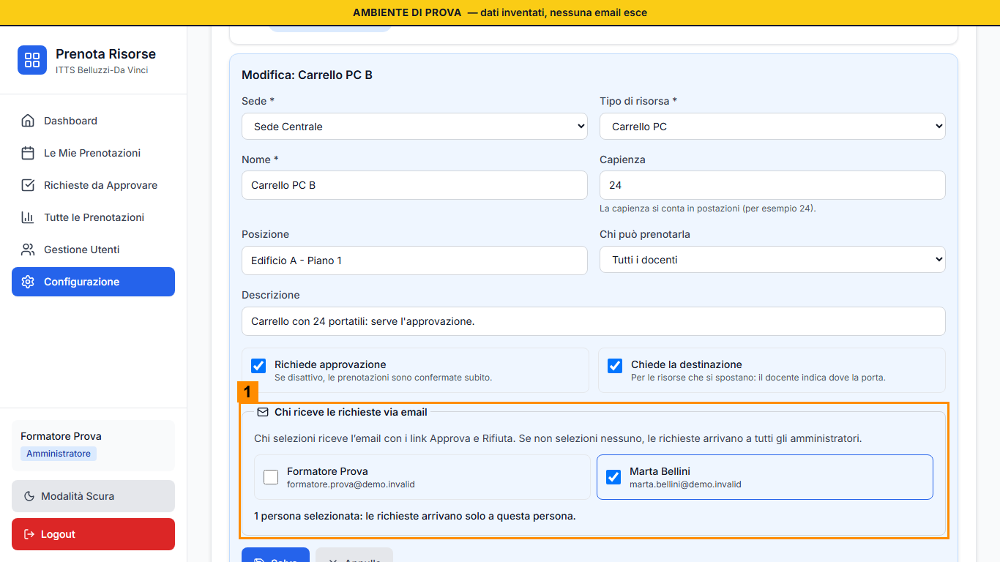

Scheda del ruolo: Destinatario delle notifiche
Obiettivo
Il Destinatario è un Amministratore scelto per una risorsa: riceve via email ogni richiesta di prenotazione di quella risorsa, con i pulsanti Approva e Rifiuta. Se per una risorsa non è stato scelto nessuno, le richieste arrivano a tutti gli Amministratori. In questo laboratorio le email non escono: le leggi nella casella finta.
Cosa fare, passo per passo
- Quando un Docente invia una richiesta, nella casella finta arriva un'email con l'oggetto «Nuova richiesta» seguito dalla risorsa e dalla data (1 nell'immagine). Se ne vedono molte, usa il campo di ricerca in alto e cerca il nome della tua risorsa.
- Aprila e leggi: Docente, risorsa, data, ora, note.
- Premi Approva (2) o Rifiuta (3). Si apre una pagina di riepilogo che chiede una conferma: fino a lì non è cambiato niente. Premi Conferma approvazione o Conferma rifiuto.
- La decisione viene registrata a tuo nome e il Docente riceve la sua email di esito, come se avessi deciso dal portale. Non ti viene chiesto di fare l'accesso.
- Il rifiuto dall'email non chiede il motivo: il Docente riceve un rifiuto secco. Se la richiesta merita una spiegazione, rifiuta dal portale, da Richieste da Approvare, dove il motivo è obbligatorio.
- Per cambiare chi riceve le richieste di una risorsa, apri Configurazione, Gestione risorse e Modifica sulla risorsa: la sezione si chiama Chi riceve le richieste via email (1 nella seconda immagine).


Cose da sapere
- Tutti i Destinatari ricevono la stessa richiesta: decide il primo che conferma. Se un collega ha già deciso, la pagina ti dice chi e quando.
- Conta il ruolo che hai al momento del clic: se nel frattempo sei stato riportato a Docente, il link non funziona più e non cambia nulla.
- I link valgono una volta sola.
- Non inoltrare queste email: chi le riceve può decidere al posto tuo.
- Un Amministratore che non è tra i destinatari può comunque decidere dal portale, da Richieste da Approvare.
Cosa controllare
- Hai trovato l'email giusta: la tua risorsa, il tuo gruppo.
- Dopo Conferma approvazione la pagina dice cosa è successo, e nella casella finta compare l'email di esito indirizzata al Docente.
- Sai spiegare perché per rifiutare conviene usare il portale.
- Dopo la tappa 4 sei tu, o la persona accanto a te, tra i destinatari della risorsa del gruppo.